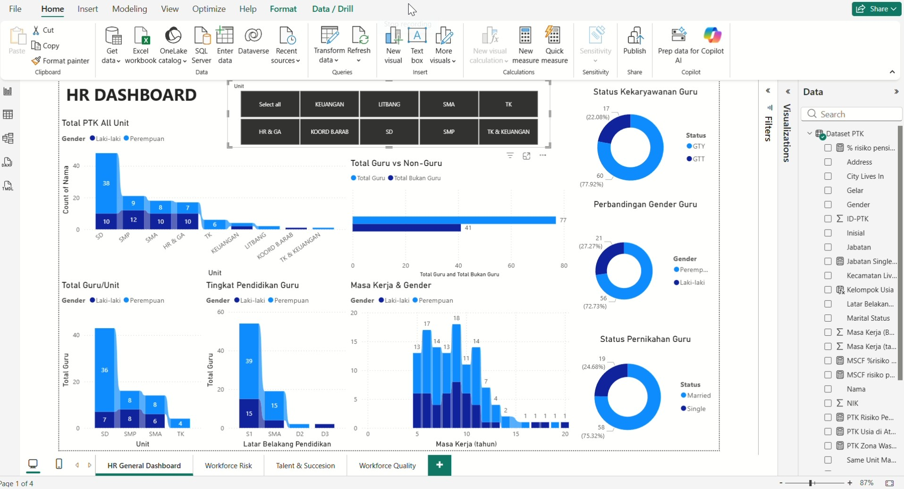
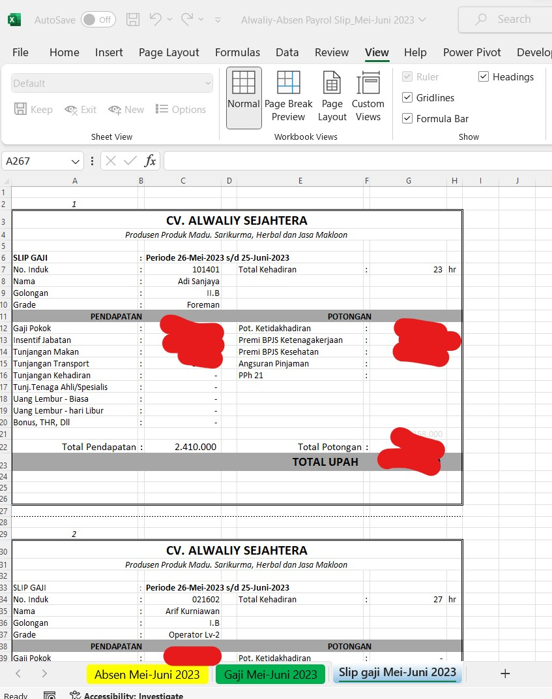
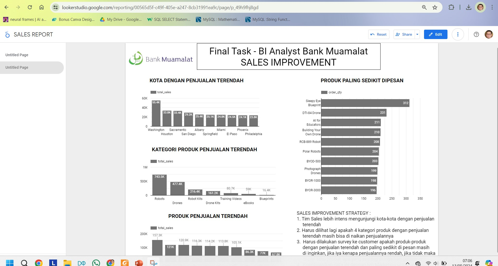
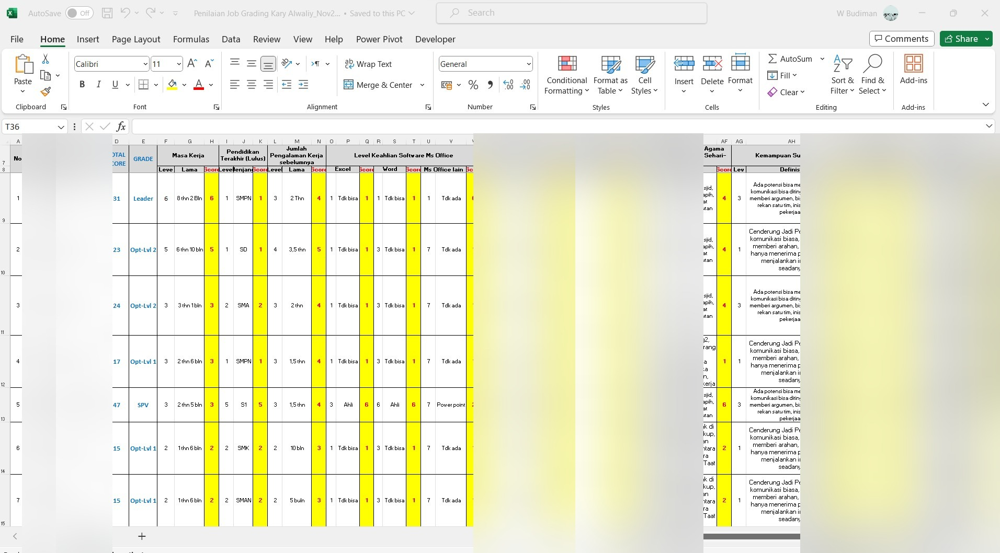
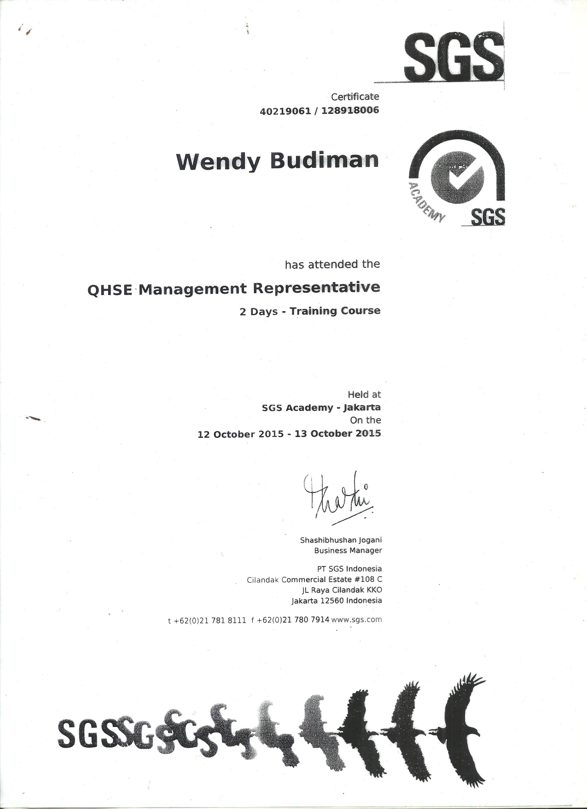

HR Manager · HR Analyst · HRBP
10+ years transforming HR operations through data analytics, AI, ISO 9001 quality systems, and HRIS implementation — proven across multinational manufacturing environments and diverse operational teams.
A rare combination of HRIS expertise, entrepreneurial mindset, and data analytics — delivering HR business partnership with sharp business acumen to drive organizational performance.
A selection of HR dashboards, analytical tools, and project outputs from real engagements — visual evidence of a data-driven approach to people management.
Interactive HR Dashboard walkthrough — featuring real-time headcount monitoring, workforce risk analysis, talent & succession planning, and workforce quality metrics. Built in Microsoft Power BI.
Power BI · Excel · MySQL




Alwaliy Sejahtera (FMCG) faced growth barriers from unstructured operations — payroll was calculated manually, compensation structure was opaque, and management had zero data visibility over business performance.
Hitachi Construction Machinery Indonesia (HCMI) was mandated to execute massive cost efficiency across all departments following a sharp decline in sales to the US and European markets.
HCMI — 19-hectare facility, 1,000+ employees across 3 shifts. External vendors were slow and unreliable, causing production disruptions, fragmented accountability, and inflated costs.
Bank Muamalat (via Rakamin Academy) — data inconsistencies and broken formula logic in performance reports were undermining the accuracy of strategic management decisions.
Available for HR Manager, HR Analyst, or HRBP roles across all industries — with a preference for environments that value a data-driven approach to people management.